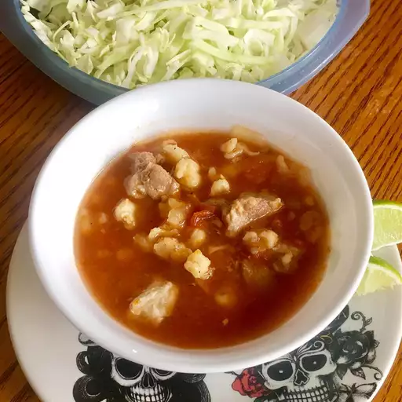

Pozole Recipe

Red Chile Pozole with Hominy
Traditional Mexican soup. It is made from hominy with meat, and can be seasoned and garnished with lettuce, onion, cabbage, garlic, radishes, avocado, limes, or salsa
Ingredients
- Pork Shoulder
- Pork Loin
- Pork Neck Bones
- Water
- Garlic
- Salt
- Plum Tomato
- Guajillo Chiles
- Oregano
- Cumin
- Hominy
Step-By-Step How To
- Put pork shoulder, loin, and neck bones in large pot covered with water.
- Add garlic and salt to taste then bring to a boil, reduce heat and simmer for about 1 hour
- After 1 hour stir in hominy and bring to boil for about 20min
- Place chile and tomato in a pot and cover with water. Cook until chiles are soft about 15min
- Place chile with salt, garlic, oregano, cumin in a blender, add water and blend until smooth
- Remove pork from pot and shred
- Stir chile and pork into pot and allow to simmer for about 5 min
- Serve
Home